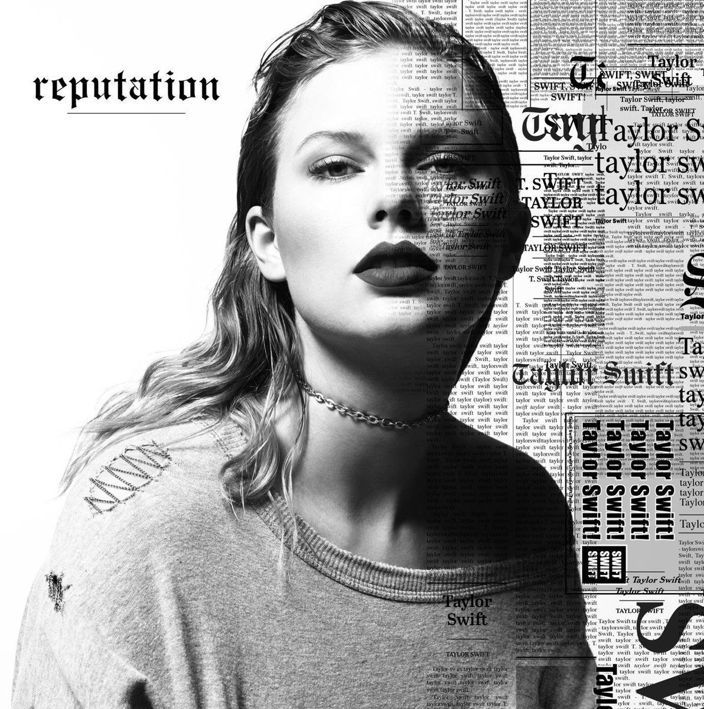

She is a American singer - songwriter, Her narrative songwriting, which often centers around her personal life, has received widespread critical plaudits and media coverage.
Folklore (stylized in all lowercase) is the eighth studio album by American singer-songwriter Taylor Swift. It was a surprise album, released through Republic Records on July 24, 2020, eleven months after its predecessor, Lover (2019). With production from Aaron Dessner and Jack Antonoff, Folklore eschews the upbeat pop of Swift's previous albums for mellow ballads driven by piano and guitar. It is mostly described as an indie folk, alternative rock, and electro-folk album while a few classify it as pop. Swift wrote and recorded the album during the COVID-19 pandemic, conceiving it as "a collection of songs and stories that flowed like a stream of consciousness" out of her imagination. As opposed to her signature autobiographical themes, Folklore manifests vivid storytelling mostly from third-person perspectives that detail escapism, introspection and nostalgia, which reflects in its cottagecore aesthetic.